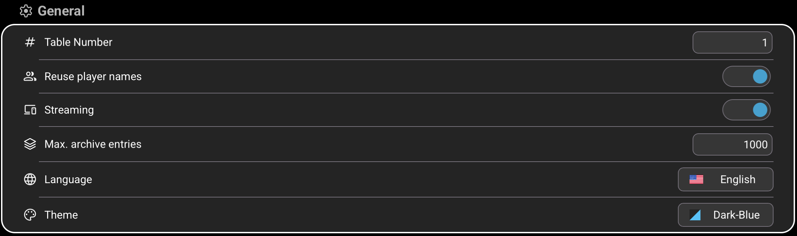
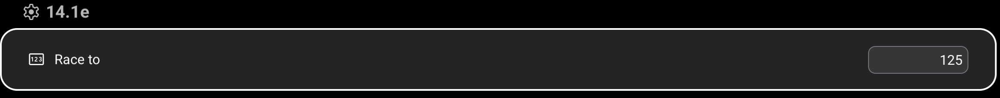
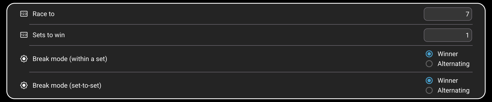

Settings are stored automatically—there is no separate Save button. General options control the app and its network behavior. Discipline settings provide the initial values for newly started matches; Race To and player names can still be adjusted for each individual match on its scoring page.
01
APPLICATION-WIDE
General
These options apply across all disciplines. Changes are stored as soon as a value, switch, language, or theme is selected.

123456
1
Table Number
Identifies the physical table and allows Monitoring to distinguish matches from different tables. Although unique numbers are not required, using a different number for each table on the same network is recommended. Enter a value from 1 to 999. The factory default is 1.
2
Reuse player names
When enabled, a new match is prefilled with the player names used in the last match. When disabled—or after restarting the app—the localized default names Player 1 and Player 2 are used. Reuse is enabled by default.
3
Streaming
When enabled, Smart-Score broadcasts the running match on the local network so another device can display it in Monitoring. The scoring and monitoring devices must be able to reach each other on the same network. Streaming is enabled by default.
4
Max. archive entries
Sets how many completed matches may be retained locally, from 1 to 10,000. When a newly finalized match exceeds the limit, Smart-Score keeps the newest matches and removes the oldest entries. The factory default is 1,000.
5
Language
Opens the language selector. Choose English or German; all localized texts are refreshed immediately, and new matches use player default names in the selected language. English is the factory default.
6
Theme
Changes the app's color theme immediately. The available themes are Dark Blue, Dark Green, and Dark Red; the selected theme remains active after restarting Smart-Score. Dark Blue is the factory default.
02
14.1 CONTINUOUS
Straight Pool
Straight Pool has one discipline default: its target score. This value is loaded when a new Straight Pool match is created.

1
1
Race To
Sets the number of points required to win a newly created Straight Pool match. Enter a value up to 9,999; the default is 125. Although this is the default for new matches, the value can be changed for each individual match by tapping Race To on the scoring page.
03
SEPARATE DEFAULTS, SAME OPTIONS
8-Ball, 9-Ball, and 10-Ball
Each of these three disciplines has its own settings group. They contain exactly the same four entries, but their values are stored independently—for example, changing a value for 9-Ball does not change 8-Ball or 10-Ball.

1234
1
Race To
Sets how many racks a player must win to take one set in that discipline. Enter a value from 1 to 100. The default is 7. Although this is the default for new matches, the value can be changed for each individual match by tapping Race To on the scoring page.
2
Sets to win
Sets how many sets a player must win to win the match. Enter a value from 1 to 9. The default is 1. This value can also be changed for an individual match on the scoring page.
3
Break mode within a set
Winner: the player who wins a rack breaks the next rack. Alternating: the break switches between the two players after every rack, regardless of who won.
4
Break mode from set to set
Winner: the winner of the completed set starts the next set. Alternating: the player who started the previous set is replaced by the other player as the starting breaker.